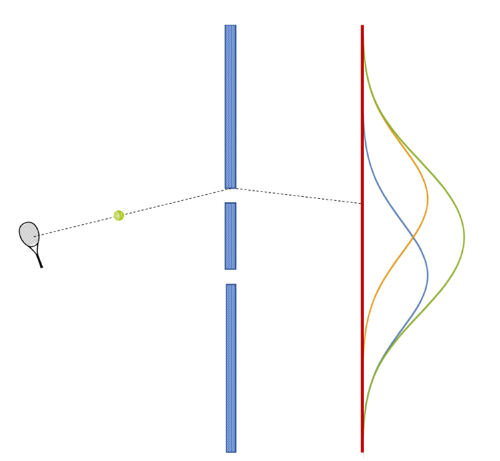

Física Quântica
Neste texto, tentarei convencer o leitor da necessidade de modificar as leis da física, afim de torná-las compatíveis com os experimentos realizados no início do século passado. É importante ressaltar que a física é uma ciência experimental e, por mais estranhos ou contraintuitivos que sejam,os modelos propostos para explicar os fenômenos naturais devem se adequar aos dados observados. A física quântica surge justamente da necessidade de ruptura de conceitos da física clássica insatisfatórios ou equivocados para descrever aspectos da física em escala microscópica.
Por que precismos de uma física nova?
No início do século XX evidências experimentais apontava
para a existência de um modelo de átomo composoto por um núcleo (descoberto no
experimento de Rutheford)
e elétrons (descobertos no experimento de tubos catódicos de Thomson) que se
movem, de alguma forma ainda indeterminada, em torno do núcleo. Certamente, a
interação que governa o movimento dos elétrons em torno do núcleo é a
eletromagnética, pois o núcleo e os elétrons tem cargas elétricas positiva
e negativa, respectivamente. Mas, imediatamente, pode ser notado um sério
problema! Com base no eletromagnetismo clássico, cargas elétricas em movimento
emitem radiação, é com base nessa noção que podemos entender a temperatura,
quanto mais quente está um corpo mais agitados estão os seus átomos e assim
mais radiação eles emitem, não há possibilidade de se ter átomos totalmente
parados, por isso é impossível alcançar uma temperatura de zero absoluto,
tudo a nossa volta possui uma temperatura não nula, o nosso corpo por exemplo
emite radiação na faixa do infra-vermelho (alguns termômetros funcionam por
meio da medição dessa radiação), ou por exemplo, uma barra de metal pode ser aquecida ao ponto
de emitir radiação na faixa da luz visível, ficando brilhante. Bom, terminada
esta digressão, voltemos para o problema inicial. Elétrons estão em movimento
em torno do núcleo e por isso emitem radiação. Isso é um problema porque
de acordo com as leis do Eletromagnetismo, o elétron, ao emitir radiação, iria
perder energia e cair em direção ao núcleo, mas isso simplesmente não pode
estar certo! Pois assim, os átomos seriam instáveis e matéria iria colapsar!
Obviamente isso está errado, uma vez que átomos são sistemas físicos
estáveis. Agora, o eletromagnetismo
deve, de alguma forma, ser modificado. Mas como?
Nas palavras do famoso Físico norte-americano Richard Feynman, a mecânica
quântica é a "descrição formal de como a luz e a matéria se comportam". Ou seja,
para podermos avançar no problema da estabilidade atômica é necessário
repensar nossas compressões acerca da luz e da matéria. Para tanto, atentemo-nos
aos experimentos.
Difração e Interferência
Um experimento conduzido em 1927 pelos fisicos
Davisson e Germer evidenciou uma propriedade exótica
dos elétrons, eles observaram efeitos de difração
ao lançarem elétrons em alvos de cristais. No
entanto, para explorar em detalhes essa propriedade,
analisemos um experimento semelhante, e que hoje
em dia pode ser reproduzido com grande precisão, que
é o experimento da fenda dupla. O aparato para tal é
composto, simplesmente por uma fonte de emissão,uma
parede com duas fendas ou orifícios estreitos e uma anteparo
de fundo, onde os resultados serão observados.
Consideremos, primeiramente, que vamos enviar partículas na parede
( por partícula o leitor pode pensar simplesmente em minúsculas bolas de tênis
, sem perca de intuição ou rigor físico ), para tanto, divimos o experimento
em 3 etapas, o primeiro consistindo de manter uma das fendas abertas, por exemplo a
de cima, e a outra fechada, enquanto que no segundo abrimos a fenda de debaixo e fechamos
a de cima, por fim, o terceiro passo é manter ambas as fendas abertas.
O resultado esperado pode ser vizualizado na imagem abaixo

Não parece haver grande coisa nesse resultado, naturalmente, nos passos em que uma das fendas está aberta, a maioria das partículas batem no detetor nas direções das fenda aberta, ao passo que ao mantermos as duas fendas abertas os padroes se somam. As curvas mostradas na figura acima correspondem a número de partículas que chega a cada ponto do anteparo, note que essas curvas revelam uma disribuição de probabilidades, ou seja, em que ponto é mais fácil a partícula alcançar.